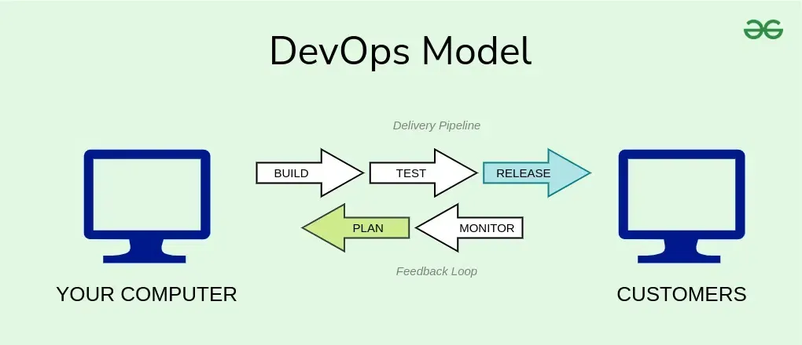

DevOps on tarkvaraarenduse kultuur,mille eesmärk on ühendada tarkvaraarendus (Dev) ja tarkvaraoperatsioonid (Ops).
Mis etapid seal on?
programmeerimine - koodi kirjutamine ja läbivaatus, lähtekoodihaldus
järgu ehitus - pidevintegratsioon, järgu staatuse haldus
testimine - pidev testimine mis annab tagasisidet äririskide kohta
pakkimine - tehistehoidla, rakenduse avalikustamise eelne proovimine
avalikustamine - muutuste haldus, avalikustamise protsessi automatiseerimine
konfigureerimine - taristu ülesseadmine ja haldamine, taristu kui koodi tööriistad;
seire rakenduse jõudluse jälgimine, lõppkasutaja kogemused.
Milline näeb välja arendusmudel joonisena?

Mis on arendusmudeli tähtsaim omadus,miks?
Põhilised DevOpsi liikumise omadused on automatiseerimine ja jälgimine kõigil tarkvaraarenduse etappidel alates
integratsioonist, testimisest ja avaldamisestkuni kasutuselevõtu ja taristu haldamiseni
Võta arendusmudel kokku heade ja veade tabelina
Head
Vead
Kiirem aeg paranemiseni rikete puhul
Protsessile üleminekuga kaasnevad ebamugavused
Lühem aeg turule
Tööriistadele, mitte töövoogudele ja inimestele keskendumine